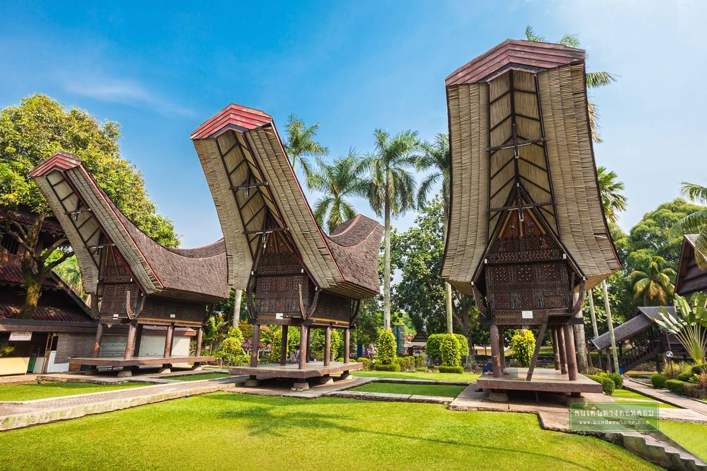

<div class="page-container align-center">
    <div class="page">
        <div class="Hero-section">
            <h1 class="title">Let's Explore The Most Famous Tourist Site in East Jakarta, <b>Taman Mini Indonesia Indah</b></h1>
            <p class="paragraph">
                Taman Mini Indonesia Indah (TMII) is a vast cultural and educational park located in East Jakarta, designed to showcase the diverse cultures, traditions, and heritage of Indonesia's many regions. Established as a microcosm of the country, TMII features pavilions from each of Indonesia's provinces, where visitors can explore traditional houses, known as anjer-anjer, representing the unique architecture and culture of different regions. These pavilions display local art, crafts, costumes, and often host cultural performances, offering an immersive experience of the nation's rich diversity.</br></br>

                The park also contains numerous museums and themed exhibits, providing educational insight into various aspects of Indonesian life. Among these are the Indonesia Museum, the Science and Technology Museum, and the Transportation Museum. Each museum offers a range of exhibits covering history, innovation, and other key aspects of Indonesian culture and society. In addition to the museums, TMII features several themed gardens such as a bird park and an orchid garden, which highlight the country's natural biodiversity.</br></br>

                TMII is not only a place for cultural exhibits but also a center for performances and national festivals. The park regularly hosts traditional music, dance performances, and religious ceremonies, making it a vibrant cultural hub. One of its popular attractions is the Keong Mas IMAX Theater, housed in a golden snail-shaped dome, which screens educational and cultural films. Furthermore, TMII symbolizes Indonesia's religious diversity by featuring replicas of major religious buildings, including a mosque, church, temple, and other structures, emphasizing the country's pluralistic identity.</br></br>

                Overall, TMII serves as an educational and cultural space that promotes Indonesia's vast cultural and ecological diversity. Through its pavilions, museums, gardens, and performances, the park offers a comprehensive way to explore the nation's heritage, making it a must-visit destination for both locals and tourists interested in learning about Indonesia.
            
            </p>
            
            <div class="gallery">
                
                
                
            </div>
            
        </div>
    </div>
</div>
